14 S4
Like S3, S4 implements functional OOP, but is much more rigorous and strict. There are three main differences between S3 and S4:
S4 classes have formal definitions provided by a call to
setClass(). An S4 class can have multiple parents (multiple inheritance).The fields of an S4 object are not attributes or named elements, but instead are called slots and are accessed with the special
@operator.Methods are not defined with a naming convention, but are instead defined by a call to
setMethod(). S4 generics can dispatch on multiple arguments (multiple dispatch).
A good overview of the motivation of S4 and its historical context can be found in Chambers and others (2014), https://projecteuclid.org/download/pdfview_1/euclid.ss/1408368569.
S4 is a rich system, and it’s not possible to cover all of it in one chapter. Instead, we’ll focus on what you need to know to read most S4 code, and write basic S4 components. Unfortunately there is not one good reference for S4 and as you move towards more advanced usage, you will need to piece together needed information by carefully reading the documentation and performing experiments. Some good places to start are:
Bioconductor course materials, a list of all courses taught by Bioconductor, a big user of S4. One recent (2017) course by Martin Morgan and Hervé Pagès is S4 classes and methods.
S4 questions on stackoverflow answered by Martin Morgan.
Software for Data Analysis, a book by John Chambers.
All S4 related functions live in the methods package. This package is always available when you’re running R interactively, but may not be available when running R in batch mode (i.e. from Rscript). For this reason, it’s a good idea to call library(methods) whenever you use S4. This also signals to the reader that you’ll be using the S4 object system.
library(methods)14.1 Classes
Unlike S3, S4 classes have a formal definition. To define an S4 class, you must define three key properties:
The class name. By convention, S4 class names use UpperCamelCase.
A named character vector that describes the names and classes of the slots (fields). For example, a person might be represented by a character name and a numeric age:
c(name = "character", age = "numeric"). The pseudo-class “ANY” allows a slot to accept objects of any type.The name of a class (or classes) to inherit behaviour from, or in S4 terminology, the classes that it contains.
Slots and contains can specify the names of S4 classes, S3 classes (if registered), and base types. We’ll go into more detail about non-S4 classes at the end of the chapter, in S4 and existing code.
To create a class, you call setClass(), supplying these three properties. Lets make this concrete with an example. Here we create two classes: a person with character name and numeric age, and an Employee that inherits slots and methods from Person, adding an additional boss slot that must be a Person. setClass() returns a low-level constructor function, which should be given the class name with a . prefix.
.Person <- setClass("Person",
slots = c(
name = "character",
age = "numeric"
)
)
.Employee <- setClass("Employee",
contains = "Person",
slots = c(
boss = "Person"
)
)setClass() has 10 other arguments, but they are all either deprecated or not recommended. If you have existing S4 code that uses them, I’d recommend carefully reading the documentation and upgrading to modern practice.
We can now use the constructor to create an object from that class:
hadley <- .Person(name = "Hadley", age = 37)
hadley
#> An object of class "Person"
#> Slot "name":
#> [1] "Hadley"
#>
#> Slot "age":
#> [1] 37It’s also possible to create an instance using new() and the name of the class. This is not recommended because it introduces some ambiguity. What happens if there are two packages that both define the Person class?
hadley2 <- new("Person", name = "Hadley", age = 37)In most programming languages, class definition occurs at compile-time, and object construction occurs later, at run-time. In R, however, both definition and construction occur at run time. When you call setClass(), you are registering a class definition in a (hidden) global variable. As with all state-modifying functions you need to use setClass() with care. It’s possible to create invalid objects if you redefine a class after already having instantiated an object:
.A <- setClass("A", slots = c(x = "numeric"))
a <- .A(x = 10)
.A <- setClass("A", slots = c(a_different_slot = "numeric"))
a
#> An object of class "A"
#> Slot "a_different_slot":
#> Error in slot(object, what): kein Slot des Namens "a_different_slot" für dieses Objekt der Klasse "A"This isn’t usually a problem, because you’ll define a class once, then leave the definition alone. If you want to enforce a single class definition, you can “seal” it:
setClass("Sealed", sealed = TRUE)
setClass("Sealed")
#> Error in setClass("Sealed"): "Sealed" has a sealed class definition and cannot be redefined14.1.1 Slots
You can access the slots with @ or slot(): @ is equivalent to $, and slot() to [[.
hadley@age
#> [1] 37
slot(hadley, "age")
#> [1] 37You can list all available slots with slotNames():
slotNames(hadley)
#> [1] "name" "age"Slots should be considered an internal implementation detail. That means:
As a user, you should not reach into someone else’s object with
@, but instead, look for a method that provides the information you want.As a developer, you should make sure that all public facing slots have their own accessor methods.
We’ll come back how to implement accessors in [Accessors], once you’ve learned how S4 generics and methods work.
14.1.2 Helper
The result of setClass() is a low-level constructor, which means that don’t need to write one yourself. However, this default constructor has three drawbacks:
The constructor takes
..., not individual named slots. This mean that printing the function is not revealing, and autocomplete doesn’t have the
data it needs to be helpful..Person #> class generator function for class "Person" from package '.GlobalEnv' #> function (...) #> new("Person", ...)If you don’t supply values for a slot, the constructor will automatically supply a default value:
.Person() #> An object of class "Person" #> Slot "name": #> character(0) #> #> Slot "age": #> numeric(0)Here, you might prefer that
nameis required, or thatagedefaults toNA.While it’s not possible to create an S4 object with the wrong slots or slots of the wrong type:
.Person(name = "Hadley", age = "thirty") #> Error in validObject(.Object): invalid class "Person" object: invalid object for slot "age" in class "Person": got class "character", should be or extend class "numeric" .Person(name = "Hadley", sex = "male") #> Error in initialize(value, ...): invalid name for slot of class "Person": sexIt is possible to create slots with the wrong lengths, or otherwise invalid values:
.Person(name = "Hadley", age = c(37, 99)) #> An object of class "Person" #> Slot "name": #> [1] "Hadley" #> #> Slot "age": #> [1] 37 99
Like with S3, we resolve these issues by writing a helper function.
Person <- function(name, age = NULL, ...) {
if (is.null(age)) {
age <- rep(NA_real_, length(name))
}
stopifnot(length(name) == length(age))
.Person(name = name, age = age)
}This provides the behaviour that we want:
# Name is now required
Person()
#> Error in Person(): Argument "name" fehlt (ohne Standardwert)
# And name and age must have same length
Person("Hadley", age = c(30, 37))
#> Error: length(name) == length(age) ist nicht TRUE
# And if not supplied, age gets a default value of NA
Person("Hadley")
#> An object of class "Person"
#> Slot "name":
#> [1] "Hadley"
#>
#> Slot "age":
#> [1] NAIt is possible to achieve the same effect by implementing an initialize() method, but the initialize() generic has a complicated contract and it is very hard to get all the details right.
To re-use checking code in a subclass, you can take advantage of a detail of the constructor: an unnamed argument is interpreted as predefined object from the parent class. For example, to define a constructor for the Employee class that reuses the Person helper, you first create a Person(), then pass that to the .Employee constructor.
Employee <- function(name, age, boss) {
person <- Person(name = name, age = age)
.Employee(person, boss = boss)
}As with S3, if the validity checking code is lengthy or expensive, you should pull it out into a separate function which the helper calls.
14.1.3 Introspection
To determine what classes an object inherits from, use is():
is(hadley)
#> [1] "Person"To test if an object inherits from a specific class, use the second argument of is():
is(hadley, "person")
#> [1] FALSEIf you are using a class provided by a package you can get help on it with class?Person.
14.1.4 Exercises
What happens if you define a new S4 class that doesn’t “contain” an existing class? (Hint: read about virtual classes in
?setClass.)Imagine you were going to reimplement ordered factors, dates, and data frames in S4. Sketch out the
setClass()calls that you would use to define the classes. What should they inherit from? What slots should they use?
14.2 Generics and methods
The job of a generic is to perform method dispatch, i.e. find the method designed to handle the combination of classes passed to the generic. Here you’ll learn how to define S4 generics and methods, then in the next section we’ll explore precisely how S4 method dispatch works.
S4 generics have a similar structure to S3 generics, but are a little more formal. To create an new S4 generic, you call setGeneric() with a function that calls standardGeneric(). .
setGeneric("myGeneric", function(x) standardGeneric("myGeneric"))Note that it is bad practice to use { in the generic function. This triggers a special case that is more expensive, and generally best avoided.
Like setClass(), setGeneric() has many other arguments. There is only one that you need to know about: signature. This allows you to control the arguments that are used for method dispatch. If signature is not supplied, all arguments (apart from ...) are used. It is occassionally useful to remove arguments from dispatch. This allows you to require that methods provide arguments like verbose = TRUE or quiet = FALSE, but they don’t take part in dispatch.
A generic isn’t useful without some methods, and in S4 you add methods with setMethod(). There are three important arguments: the name of the generic, the name of the class, and the method itself.
setMethod("myGeneric", "Person", function(x) {
# method implementation
})(Again, just like setClass(), setMethod() has other arguments, but you should never use them.)
14.2.1 Show method
As with S3, the most commonly defined S4 method controls printing, but in S4 we use a different generic: show().
When defining a method for an existing generic, you need to first determine the arguments. You can get those from the documentation or by looking at the formals of the generic:
names(formals(getGeneric("show")))
#> [1] "object"Our show method needs to have a single argument object:
setMethod("show", "Person", function(object) {
cat(is(object)[[1]], "\n",
" Name: ", object@name, "\n",
" Age: ", object@age, "\n",
sep = ""
)
})
hadley
#> Person
#> Name: Hadley
#> Age: 37More formally, the second argument to setMethod() is called the signature. In S4, unlike S3, the signature can include multiple arguments. This makes method dispatch in S4 substantially more complicated, but avoids having to implement double-dispatch as a special case. We’ll talk more about multiple dispatch in the next section.
14.2.2 Accessor methods
Slots are generally considered to be an internal implementation detail: they can change without warning and user code should avoid accessing them directly. Instead, all user-readble slots should get an accessor. If the slot is unique to the class, this can just be a function:
person_name <- function(x) x@nameBut typically, you will want to define a generic and provide a method for your class:
setGeneric("name", function(x) standardGeneric("name"))
setMethod("name", "Person", function(x) x@name)
name(hadley)
#> [1] "Hadley"If the slot is also writeable, you should provide a setter function. Typically this function will be more complicated than the getter because you’ll need to check that the new value is valid, or you may need to modify other slots. Here we make sure that this functions only allows changing the values, not the length:
`person_name<-` <- function(x, value) {
stopifnot(length(x@name) == length(value))
x@name <- value
x
}Again, you’ll typically want to do this with a method:
setGeneric("name<-", function(x, value) standardGeneric("name<-"))
setMethod("name<-", "Person", function(x, value) {
stopifnot(length(x@name) == length(value))
x@name <- value
x
})
name(hadley) <- "Hadley Wickham"
name(hadley)
#> [1] "Hadley Wickham"14.2.3 Coercion methods
To coerce S4 object from one class to another, use as(). One nice feature of S4 is that it provides default coercion methods for you:
mary <- new("Person", name = "Mary", age = 34)
roger <- new("Employee", name = "Roger", age = 36, boss = mary)
as(roger, "Person")
#> Person
#> Name: Roger
#> Age: 36The defaults are not always quite right. For example, what happens if we try and coerce a Person to an Employee? The coercion succeeds because the boss slot is “helpfully” filled in with a default object:
mary_employee <- as(mary, "Employee")
mary_employee@boss
#> Person
#> Name:
#> Age:We can override the default coercion to supply an informative error.
setAs("Person", "Employee", function(from) {
stop("Can not coerce an Person to an Employee", call. = FALSE)
})
as(mary, "Employee")
#> Error: Can not coerce an Person to an Employee14.2.4 Introspection
To list all the methods that belong to a generic, or that are associated with a class, use sloop::s4_methods_generic() and s4_methods_class():
library(sloop)
s4_methods_generic("initialize")
#> # A tibble: 14 x 4
#> generic class visible source
#> <chr> <chr> <lgl> <chr>
#> 1 initialize .environment T ""
#> 2 initialize ANY T methods
#> 3 initialize array T ""
#> 4 initialize environment T ""
#> 5 initialize envRefClass T methods
#> 6 initialize externalRefMethod T ""
#> 7 initialize matrix T ""
#> 8 initialize MethodsList T ""
#> 9 initialize Module T Rcpp
#> 10 initialize mts T ""
#> 11 initialize oldClass T ""
#> 12 initialize signature T ""
#> 13 initialize traceable T ""
#> 14 initialize ts T ""
s4_methods_class("Person")
#> # A tibble: 7 x 4
#> generic class visible source
#> <chr> <chr> <lgl> <chr>
#> 1 coerce Person T R_GlobalEnv
#> 2 coerce Person T R_GlobalEnv
#> 3 coerce<- Person T R_GlobalEnv
#> 4 myGeneric Person T R_GlobalEnv
#> 5 name Person T R_GlobalEnv
#> 6 name<- Person T R_GlobalEnv
#> 7 show Person T R_GlobalEnvIf you’re looking for the implementation of a specific method, you can use selectMethod(). You give it the name of the generic and the class (or classes) that it’s called with:
selectMethod("show", "Person")
#> Method Definition:
#>
#> function (object)
#> {
#> cat(is(object)[[1]], "\n", " Name: ", object@name, "\n",
#> " Age: ", object@age, "\n", sep = "")
#> }
#> <bytecode: 0x7fc24a09bf10>
#>
#> Signatures:
#> object
#> target "Person"
#> defined "Person"If you’re using a method defined in a package, the easiest way to get help on it is to construct a valid call, and then put ? in front it. ? will use the arguments to figure out which help file you need:
?show(hadley)14.2.5 Exercises
In the definition of the generic, why is it necessary to repeat the name of the generic twice?
What’s the difference between the generics generated by these two calls?
setGeneric("myGeneric", function(x) standardGeneric("myGeneric")) setGeneric("myGeneric", function(x) { standardGeneric("myGeneric") })What happens if you define a method with different argument names to the generic?
What other ways can you find help for a method? Read
?"?"and summarise the details.
14.3 Method dispatch
S4 dispatch is complicated because S4 has two important features:
- Multiple inheritance, i.e. a class can have multiple parents,
- Multiple dispatch, i.e. a generic can use multiple arguments to pick a method.
These features make S4 very powerful, but can also make it hard to understand which method will get selected for a given combination of inputs.
To explain method dispatch, we’ll start simple with single inheritance and single dispatch, and work our way up to the more complicated cases. To illustrate the ideas without getting bogged down in the details, we’ll use an imaginary class graph based on emoji:
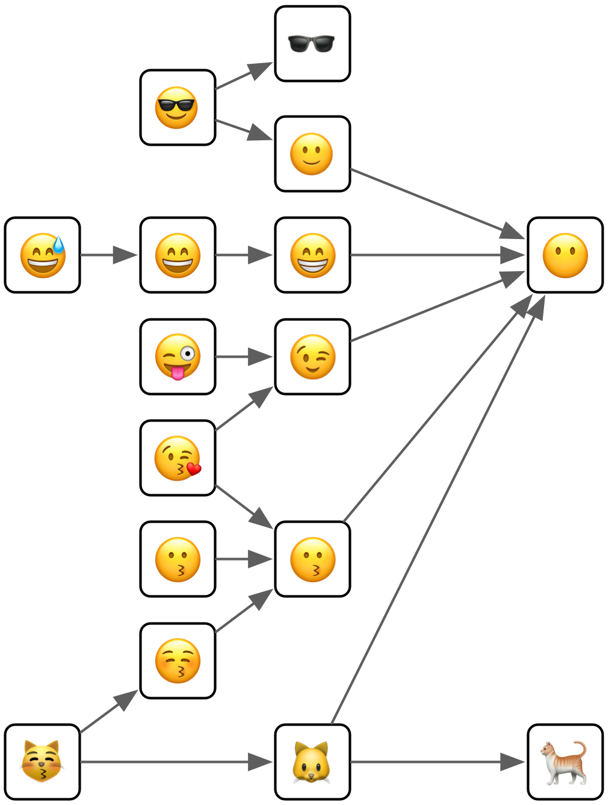
Emoji give us very compact class names (just one symbol) that evoke the relationships between the classes. It should be straightforward to remember that 😜 inherits from 😉 which inherits from 😶, and that 😎 inherits from both 🕶 and 🙂
14.3.1 Single dispatch
Let’s start with the simplest case: a generic function that dispatches on a single class with a single parent. The method dispatch here is quite simple, and the same as S3, but this will serve to define the graphical conventions we’ll use for the more complex cases.
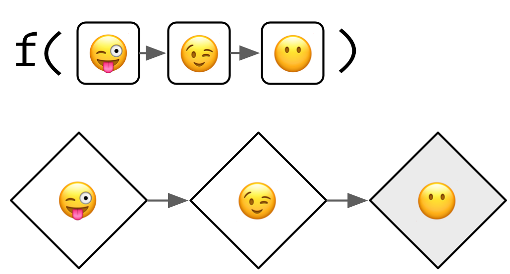
There are two parts to this diagram:
The top part,
f(...), defines the scope of the diagram. Here we have a generic with one argument, and we’re going to explore method dispatch for a class hierarchy that is three levels deep. We’ll only ever look at a small fragment of the complete class graph. This keeps individual diagrams simple while helping you build intuition that you apply to more complex class graphs.The bottom part is the method graph and displays all the possible methods that could be defined. Methods that have been defined (i.e. with
setMethod()) have a grey background.
To find the method that gets called, you start with the class of the actual arguments, then follow the arrows until you find a method that exists. For example, if you called the function with an object of class 😉 you would follow the arrow right to find the method defined for the more general 😶 class. If no method is found, method dispatch has failed and you get an error. For this reason, class graphs should usually have methods defined for all the terminal nodes, i.e. those on the far right.
There are two pseudo-classes that you can define methods for. These are called pseudo-classes because they don’t actually exist, but allow you to define useful behaviours. The first pseudo-class is “ANY”. This matches any class, and plays the same role as the default pseudo-class in S3. For technical reasons that we’ll get to later, the link to the “ANY” method is longer than the links between the other classes:
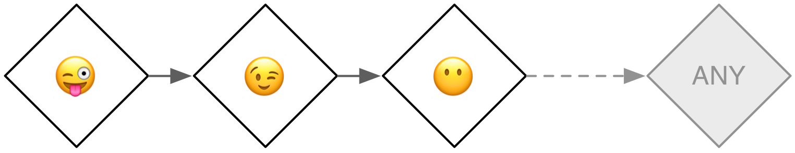
The second pseudo-class is “MISSING”. If you define a method for this “class”, it will match whenever the argument is missing. It’s generally not useful for functions that take a single argument, but can be used for functions like + and - that behave differently depending on whether they have one or two arguments.
14.3.2 Multiple inheritance
Things get more complicated when the class has multiple parents.
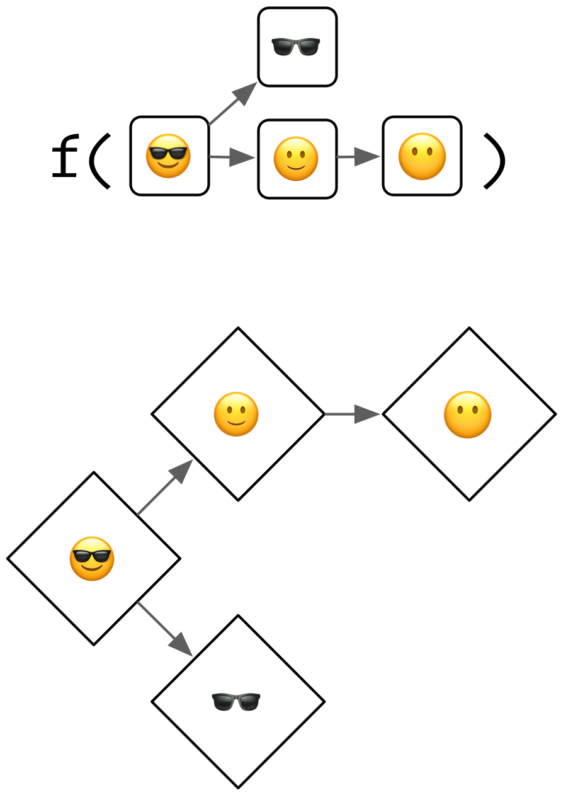
The basic process remains the same: you start from the actual class supplied to the generic, then follow the arrows until you find a defined method. The wrinkle is now that there are multiple arrows to follow, so you might find multiple methods. If that happens, you pick the method that is closest, i.e. requires travelling the fewest arrows.
(The method graph is a powerful metaphor that helps you understand how method dispatch works. However, implementing method dispatch in this way would be rather inefficient so the actual approach that S4 uses is somewhat different. You can read the details in ?Methods_Details)
What happens if methods are the same distance? For example, imagine we’ve defined methods for 🕶 and 🙂, and we call the generic with 😎. Note that there’s no implementation for the 😶 class, as indicated by the red double outline.
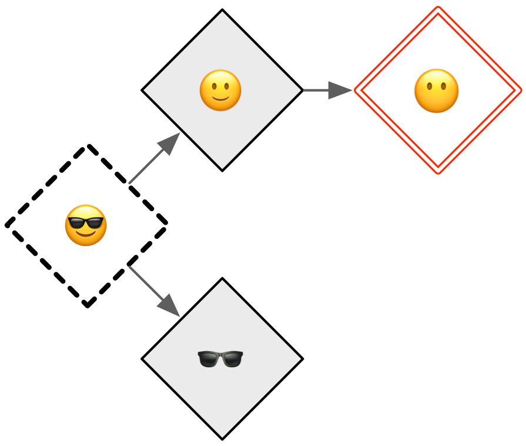
This is called an ambiguous method, and in diagrams I’ll illustrate it with a thick dotted border. When this happens in R, you’ll get a warning, and one of the two methods is basically picked at random (it uses the method that comes first in the alphabet). When you discover ambiguity you should always resolve it by providing a more precise method:
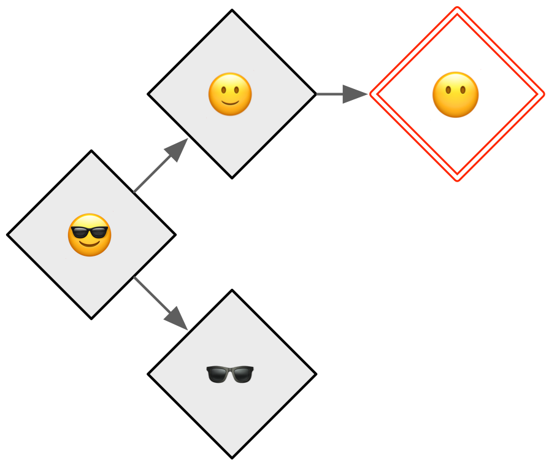
The fallback “ANY” method still exists but the rules are little more complex. As indicated by the wavy dotted lines, the “ANY” method is always considered further away than a method for a real class. This means that it will never contribute to ambiguity.
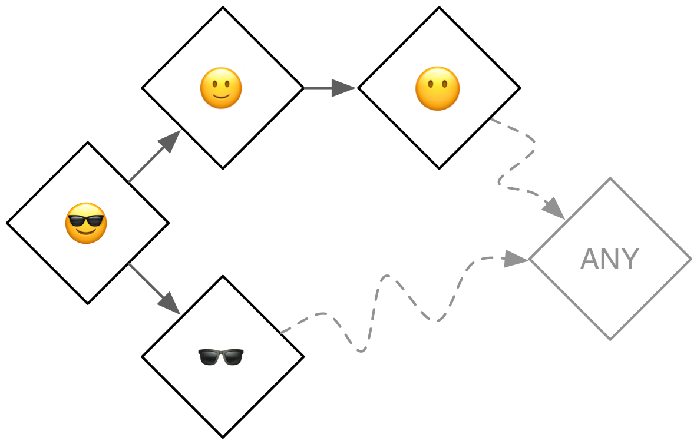
It is hard to simultaneously prevent ambiguity, ensure that every terminal method has an implementation, and minimise the number of defined methods (in order to benefit from OOP). For example, of the six ways to define only two methods for this call, only one is free from problems. For this reason, I recommend using multiple inheritance with extreme care: you will need to carefully think about the method graph and plan accordingly.
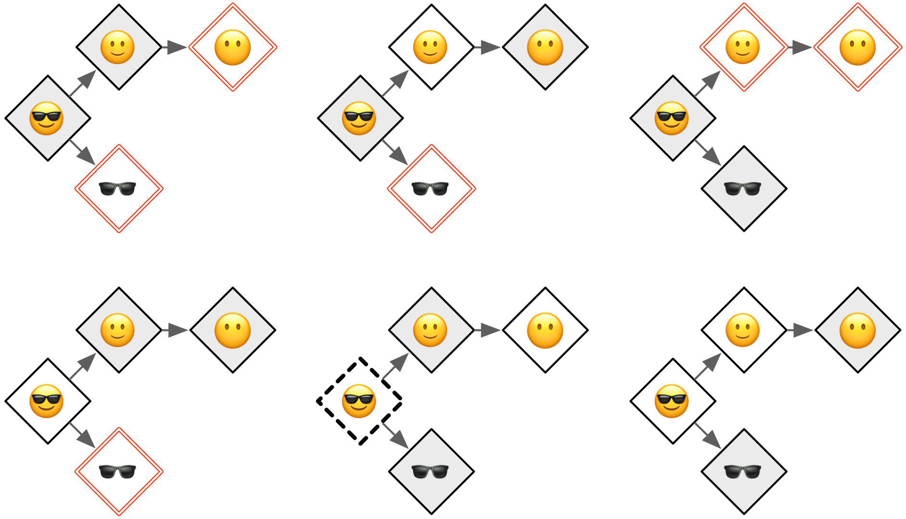
14.3.3 Multiple dispatch
Once you understand multiple inheritance, understanding multiple dispatch is straightforward. You follow multiple arrows in the same way as previously, but now each method is specified by two classes (separated by a comma).
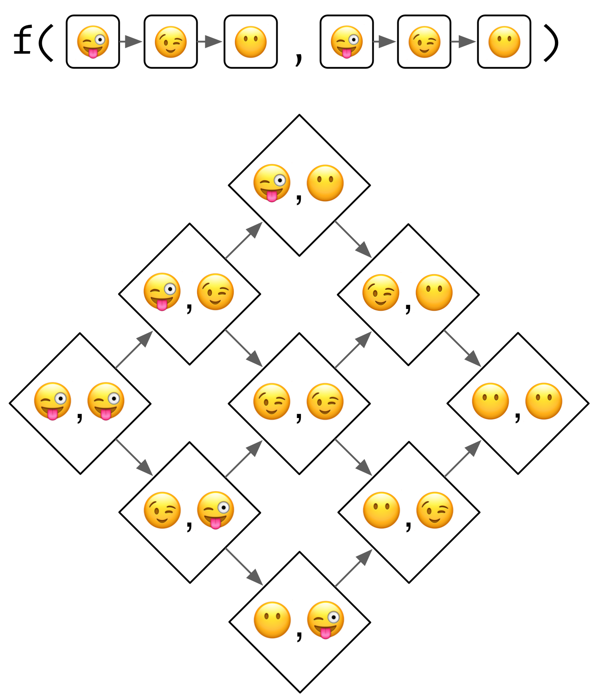
I’m not going to show examples of dispatching on more than two arguments, but you can follow the basic principles to generate your own method graphs.
The main difference between multiple inheritance and multiple dispatch is that there are many more arrows to follow. The following diagram shows four defined methods which produce two ambiguous cases:
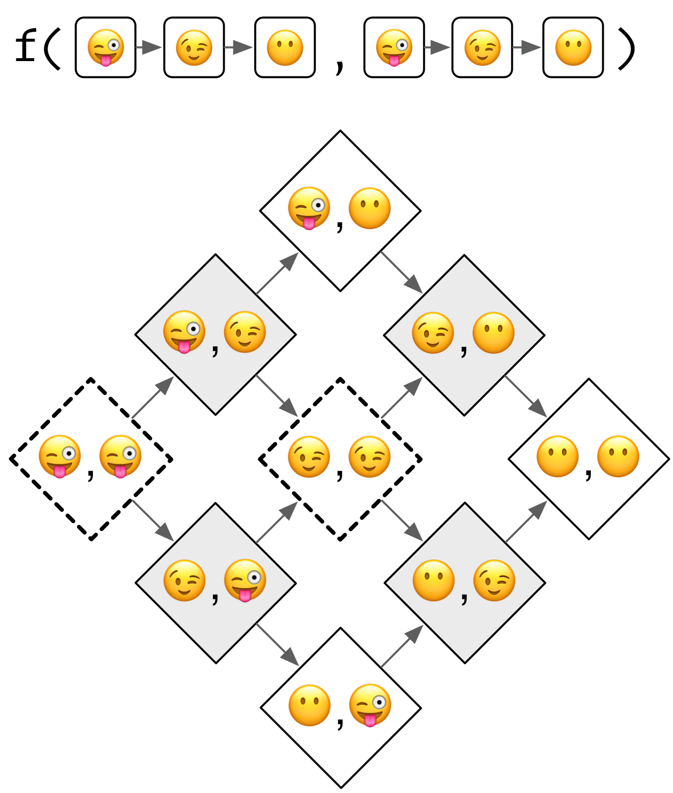
Multiple dispatch tends to be less tricky to work with than multiple inheritance because there are usually fewer terminal class combinations. In this example, there’s only one. That means, at a minimum, you can define a single method and have default behaviour for all inputs.
14.3.4 Multiple dispatch and multiple inheritance
Of course you can combine multiple dispatch with multiple inheritance:
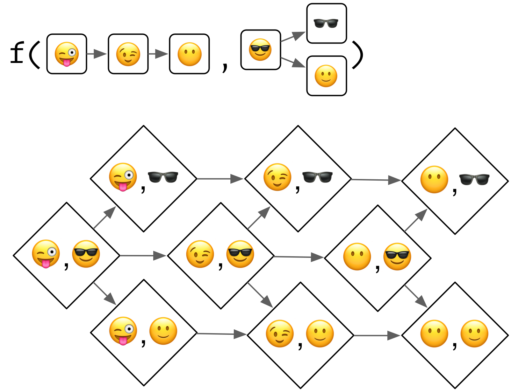
A still more complicated case dispatches on two classes, both of which have multiple inheritance:
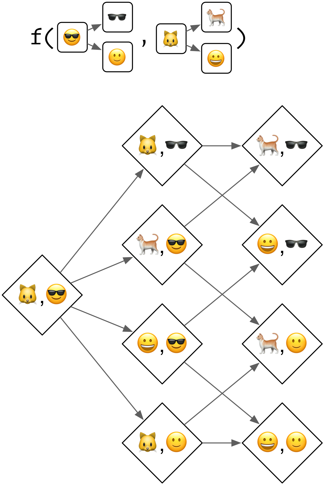
However, as the method graph gets more and more complicated it gets harder and harder to predict which actual method will get called given a combination of inputs, and it gets harder and harder to make sure that you haven’t introduced ambiguity. I highly recommend avoiding the combination of the two. There are some techniques (like mixins) that allow you to tame this complexity, but I am not aware of a detailed treatment as applied to S4.
14.3.5 Exercises
- Take the last example which shows multiple dispatch over two classes that use multiple inheritance. What happens if you define a method for all terminal classes? Why does method dispatch not save us much work here?
14.4 S4 and existing code
Even when writing new S4 code, you’ll still need to interact with existing S3 classes and functions, including existing S3 generics. This section describes how S4 classes, methods, and generics interact with existing code.
14.4.1 Classes
In slots and contains you can use S4 classes, S3 classes, or the implicit class of a base type. To use an S3 class, you must first register it with setOldClass(). You call this function once for each S3 class, giving it the class attribute. For example, the following definitions are already provided by base R:
setOldClass("data.frame")
setOldClass(c("ordered", "factor"))
setOldClass(c("glm", "lm"))Generally, these definitions should be provided by the creator of the S3 class. If you’re trying to build an S4 class on top of a S3 class provided by a package, it is better to request that the package maintainer add this call to the package, rather than running it yourself.
If an S4 object inherits from an S3 class or a base type, it will have a special virtual slot called .Data. This contains the underlying base type or S3 object:
RangedNumeric <- setClass(
"RangedNumeric",
contains = "numeric",
slots = c(min = "numeric", max = "numeric")
)
rn <- RangedNumeric(1:10, min = 1, max = 10)
rn@min
#> [1] 1
rn@.Data
#> [1] 1 2 3 4 5 6 7 8 9 10It is possible to define S3 methods for S4 generics, and S4 methods for S3 generics (provided you’ve called setOldClass()). However, it’s more complicated than it might appear at first glance, so make sure you thoroughly read ?Methods_for_S3.
14.4.2 Generics
As well as creating a new generic from scratch (as shown in generics and methods), it’s also possible to convert an existing function to a generic.
sides <- function(object) 0
setGeneric("sides")In this case, the existing function becomes the default (“ANY”) method:
selectMethod("sides", "ANY")
#> Method Definition (Class "derivedDefaultMethod"):
#>
#> function (object)
#> 0
#>
#> Signatures:
#> object
#> target "ANY"
#> defined "ANY"Note that setMethod() will automatically call setGeneric() if the first argument isn’t already a generic, enabling you to turn any existing function into an S4 generic. I think it is ok to convert an existing S3 generic to S4, but you should avoid converting regular functions because it makes code harder to use (and requires coordination if done by multiple packages).
14.4.3 Exercises
References
Chambers, John M, and others. 2014. “Object-Oriented Programming, Functional Programming and R.” Statistical Science 29 (2). Institute of Mathematical Statistics: 167–80.